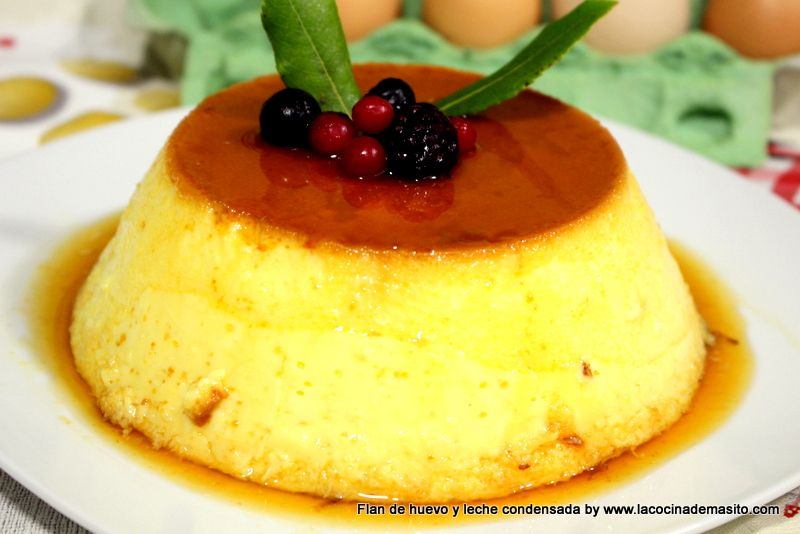

flan de leche
EL flan es un postre elaborado con una natilla

Ingredientes
- 5 unidades de huevo
- 2 unidades de leche evaporada
- 1 lata de leche condensada
- 1 unidad de leche evaporada
- 1/4 cucharadita sal de masa
Pasos
- pon el azucar flanera medio para hacer el caramelo
- vierte en el procesador todos los ingredientes menos el azucar por 5 minutos
- azucar durante 5 minutos
- el caramel de ve de estar frio para que no se mezcle los ingredientes
- coloca la flanera al bano maria en el horno por 45 minutos
\